Project 4: Neural Radiance Fields (NeRF)
Building a complete Neural Radiance Field pipeline from scratch: camera calibration with ArUco markers, 2D neural field warm-up, and full 3D volumetric scene reconstruction from multi-view images. Training on both synthetic Lego data and my own captured bread dataset to generate photorealistic novel views.
Part 0: Camera Calibration and 3D Scanning
The foundation of NeRF is accurate camera geometry. In this part, I implement a complete camera calibration pipeline using ArUco markers to estimate camera intrinsics and extrinsics, then capture and process my own 3D object scan for training.
Part 0.1 & 0.2: Camera Calibration
I captured 30-50 calibration images of ArUco markers from a 4×4 dictionary containing 50 unique
markers, varying both camera angle and distance to ensure robust calibration. The
calibrate_camera_aruco() function implements marker detection using OpenCV's
cv2.aruco.detectMarkers() with carefully tuned detection parameters. I configure the
adaptive thresholding window size to range from a minimum of 3 to a maximum of 23 pixels with a step
size of 10, and enable contour-based corner refinement using CORNER_REFINE_CONTOUR for
sub-pixel accuracy.
For each detected marker, I establish 3D-to-2D point correspondences by defining the physical marker
corners on the z=0 plane with TAG_SIZE_M = 0.02 meters (2cm squares), and matching them to
their detected 2D pixel coordinates in the image. After accumulating these correspondences across all
calibration images—handling cases where markers aren't detected by skipping those frames—I call
cv2.calibrateCamera() to solve for the camera intrinsic matrix and lens distortion
coefficients using least-squares optimization.
Calibration Results: Achieved an RMS reprojection error of 0.4901
pixels, indicating excellent calibration quality. The computed
camera_matrix shows focal lengths fx=1594.0945 and
fy=1596.4933 pixels, with principal point at (cx=592.6713, cy=789.7637).
This low reprojection error validates that my detected markers accurately align with their
projected positions using the recovered intrinsics.
Part 0.3: Estimating Camera Pose
Next, I captured 50 images of my bread object positioned next to a single ArUco marker. Using the
calibrated intrinsics from Part 0.1, my estimate_poses() function solves the classic
Perspective-n-Point (PnP) problem for each image to recover the camera's position and orientation. I
define the marker's 3D corner coordinates centered at the world origin by computing
half = TAG_SIZE_M / 2.0, then creating a 4×3 array with corners at: top-left (-half, +half,
0), top-right (+half, +half, 0), bottom-right (+half, -half, 0), and bottom-left (-half, -half, 0), all
lying flat on the z=0 plane.
For each detected marker, I call cv2.solvePnP() using the
SOLVEPNP_IPPE_SQUARE flag which is optimized for planar square targets, providing both the
rotation vector rvec and translation vector tvec. Since
solvePnP() returns the world-to-camera transformation, I must invert it to get
camera-to-world for NeRF. I first convert rvec to a 3×3 rotation matrix using
cv2.Rodrigues(), construct the 4×4 world-to-camera matrix by placing the rotation in the
upper-left 3×3 block and translation in the first three elements of the fourth column, then compute
c2w as the inverse of this matrix cast to float32 for GPU compatibility.
Pose Estimation Results: Successfully estimated poses for all 50/50 images. Camera positions span from -0.119m to 0.120m along the X-axis, -0.115m to 0.151m along Y, and 0.077m to 0.188m along Z, with a mean camera position at [-0.006, 0.010, 0.131] meters from the ArUco tag origin. The maximum distance of any camera from the origin is 0.216 meters, confirming my capture strategy of maintaining consistent distance while varying viewpoint angles.
Part 0.4: Visualization with Viser
I visualize the estimated camera poses in 3D space using the Viser library. The
visualize_cameras() function renders each camera as a frustum with its corresponding
captured image as a thumbnail. To ensure the frustums are visible regardless of scene scale, I
automatically compute an appropriate frustum_scale by taking the maximum of 0.02 or 15% of
the camera cloud's maximum radius from the origin. I also add a ground grid on the XZ plane and
coordinate axes at the world origin to provide spatial reference. For each camera, I use
server.scene.add_camera_frustum() with field-of-view calculated from the intrinsics as
2.0 * np.arctan2(H / 2.0, fx), the aspect ratio as W / H, and the camera
orientation converted to quaternion format using
viser.transforms.SO3.from_matrix(c2w[:3, :3]).wxyz, with position extracted from
c2w[:3, 3].
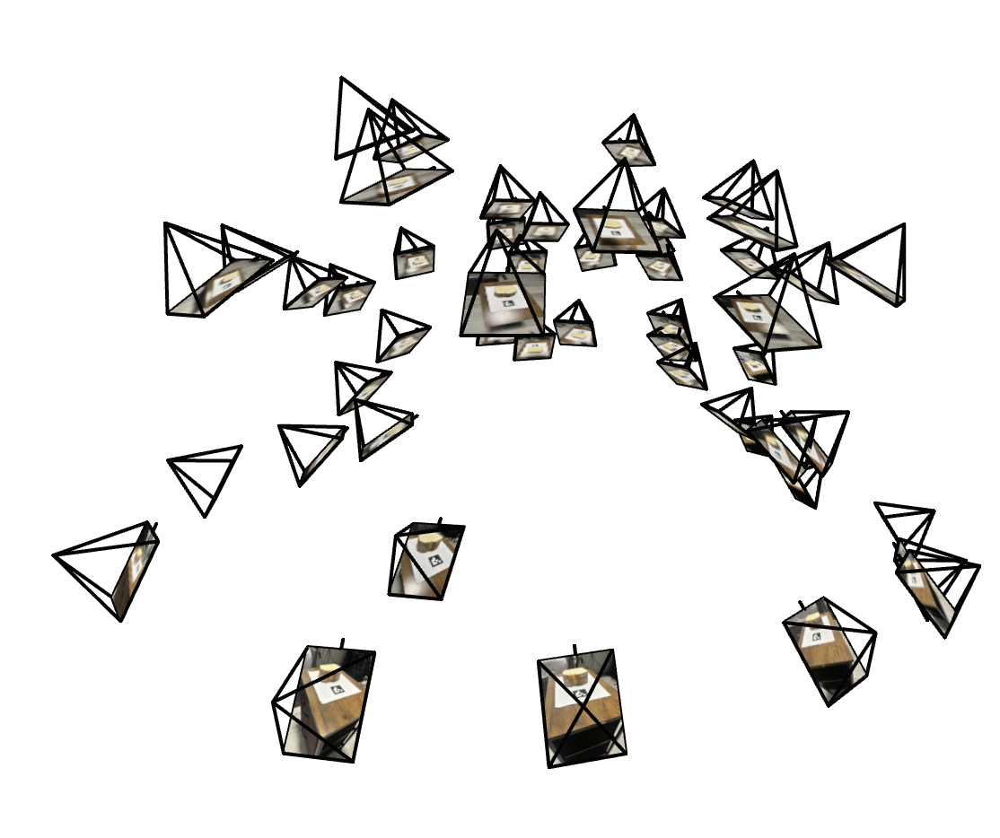
Camera Frustums - Overhead View
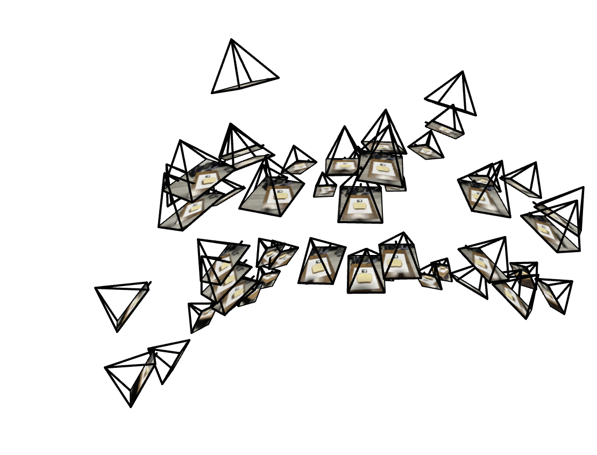
Camera Frustums - Side View with Grid
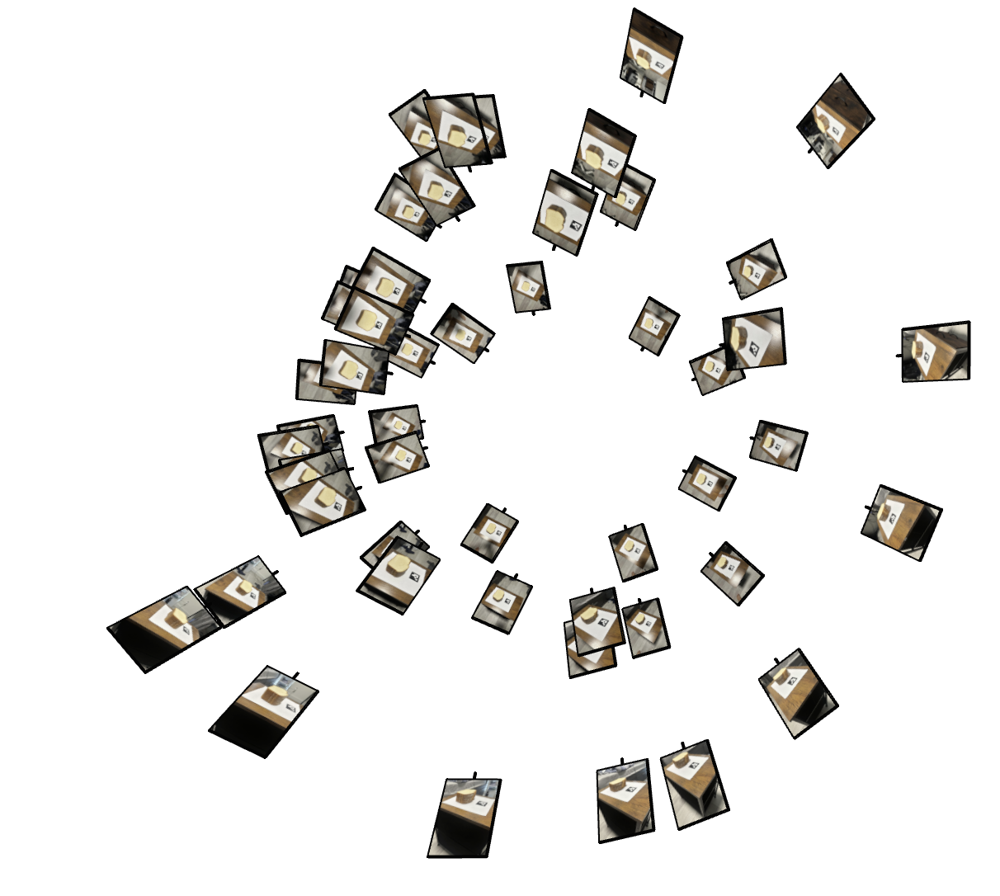
Camera Frustums - Angled View Showing Distribution
Part 0.5: Dataset Creation
Finally, the create_nerf_dataset() function undistorts all captured images and packages
them into the standardized format expected by NeRF training code. To minimize black borders that appear
after lens undistortion, I first call cv2.getOptimalNewCameraMatrix() with
alpha=0 to compute both a new intrinsics matrix new_K and a region-of-interest
roi that maximally crops out invalid pixels. I then undistort each image using
cv2.undistort() with the original camera_matrix, dist_coeffs, and
new_K, followed by cropping to the valid ROI region defined by
(x, y, w_roi, h_roi). Critically, after cropping I must update the principal point in
new_K by subtracting the crop offsets: new_K[0, 2] -= x for the x-coordinate
and new_K[1, 2] -= y for the y-coordinate, since the coordinate system origin has shifted.
I split the 50 successfully posed images into training, validation, and test sets using an 80/10/10
ratio with random.seed(42) for reproducibility, resulting in 40 training images, 5
validation images, and 5 test poses. The final dataset is saved as bread_nerf_dataset.npz
(258.8 MB) using np.savez() with the following structure: images_train and
images_val as uint8 arrays in [0, 255] range with shape (N, H, W, 3);
c2ws_train, c2ws_val, and c2ws_test as float32 4×4
camera-to-world transformation matrices; and focal as a single float32 value of 1594.094
pixels extracted from new_K[0, 0]. Note that test images are not included—only their camera
poses—as these will be used to render novel views after training.
Part 1: Neural Field for 2D Images
Before tackling 3D NeRF, I warm up with a simpler 2D version: fitting a neural network to represent an image as a continuous function f(x,y) → RGB. This introduces key concepts like positional encoding and gradient-based optimization.
Model Architecture
My NeuralField2D model consists of:
- Positional Encoding (PE): Transforms 2D coordinates (x,y) ∈ [0,1] using
sinusoidal functions at L frequency levels. For input x and max frequency L:
Output dimension:PE(x) = [x, sin(2⁰πx), cos(2⁰πx), ..., sin(2^(L-1)πx), cos(2^(L-1)πx)]2 + 4L(for L=10: 42 dimensions) - MLP Network: 3-layer architecture with ReLU activations:
Where W is the layer width (e.g., 256)Input (2D) → PE (42D) → Linear(42→W) → ReLU → Linear(W→W) → ReLU → Linear(W→W) → ReLU → Linear(W→3) → Sigmoid → RGB
Key Parameters
| Parameter | Value | Description |
|---|---|---|
| Learning Rate | 1e-2 | Adam optimizer |
| Batch Size | 10,000 | Random pixels per iteration |
| Iterations | 2,000 | Training steps |
| Loss Function | MSE | Mean Squared Error |
| Device | MPS | Apple Metal GPU acceleration |
Training Results: Fox Image (1024×689)
With the default configuration (L=10, W=256, 143,363 parameters), I achieved excellent reconstruction quality on the provided fox image. Training progressed rapidly in the first 500 iterations (PSNR: 9.07 → 25.39 dB) then refined details through iteration 2000 (final PSNR: 26.41 dB).
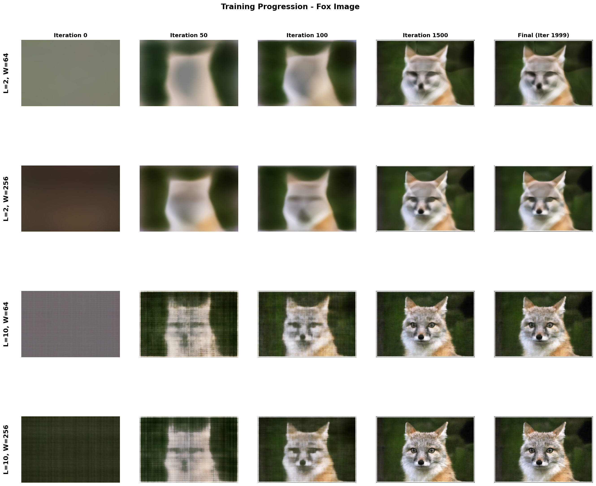
Fox Training Progression: Iterations 0, 500, 1000, 1500, 2000
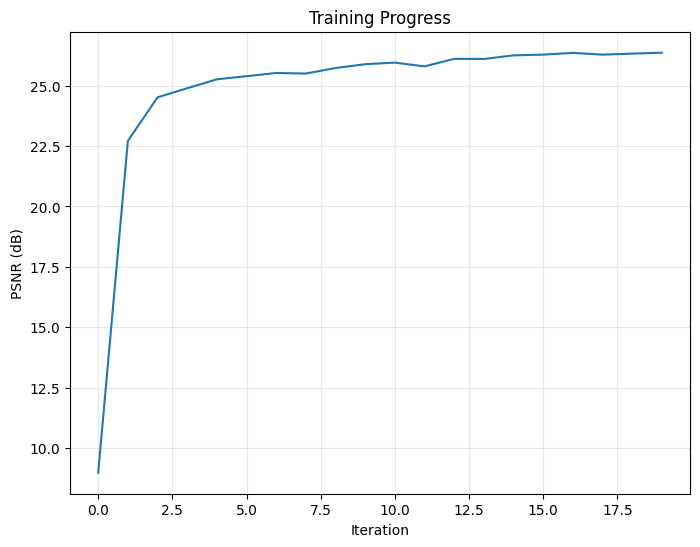
PSNR Curve: Final 26.41 dB after 2000 iterations (~131 iter/sec)
Custom Image: Messi (1283×1547)
I trained on a larger custom image (Messi with World Cup trophy) using the same hyperparameters. The larger resolution (1,984,201 pixels vs 705,536 for fox) resulted in slower training speed (~96 iter/sec) but achieved even higher final quality (PSNR: 27.89 dB).
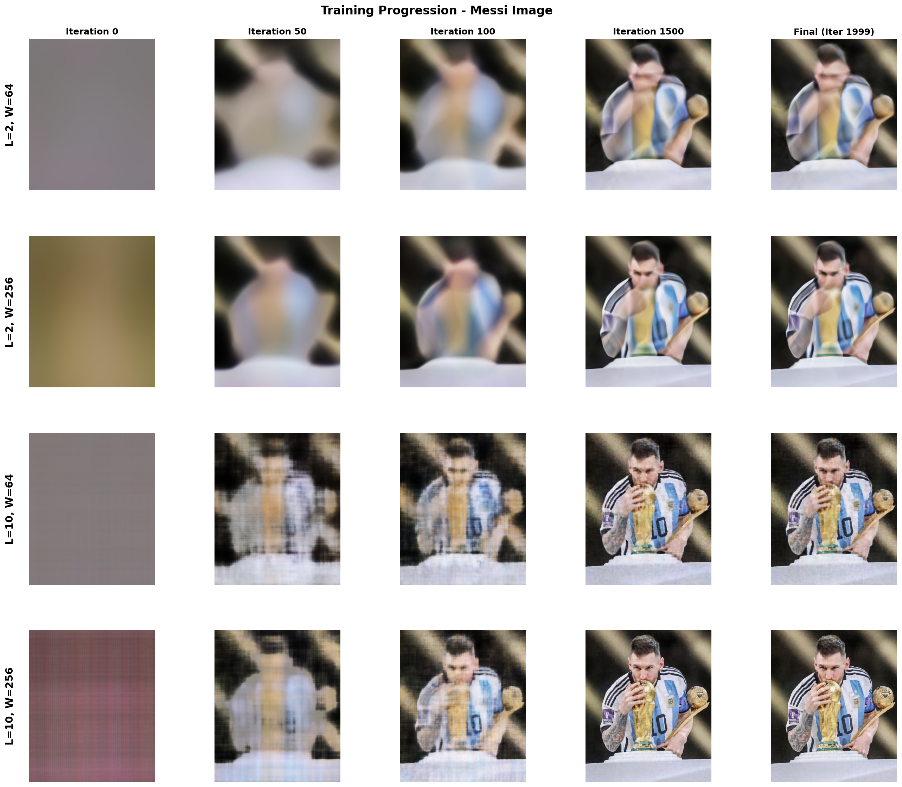
Messi Training Progression: Clear facial features and trophy details emerge
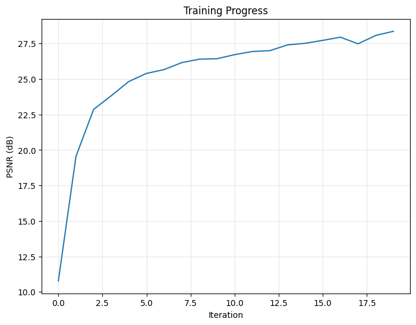
PSNR Curve: Final 27.89 dB (higher than fox due to more pixels)
Hyperparameter Ablation Study
I conducted a systematic grid search over frequency levels L ∈ {2, 10} and network width W ∈ {64, 256} to understand their impact on reconstruction quality.
Fox Image Results
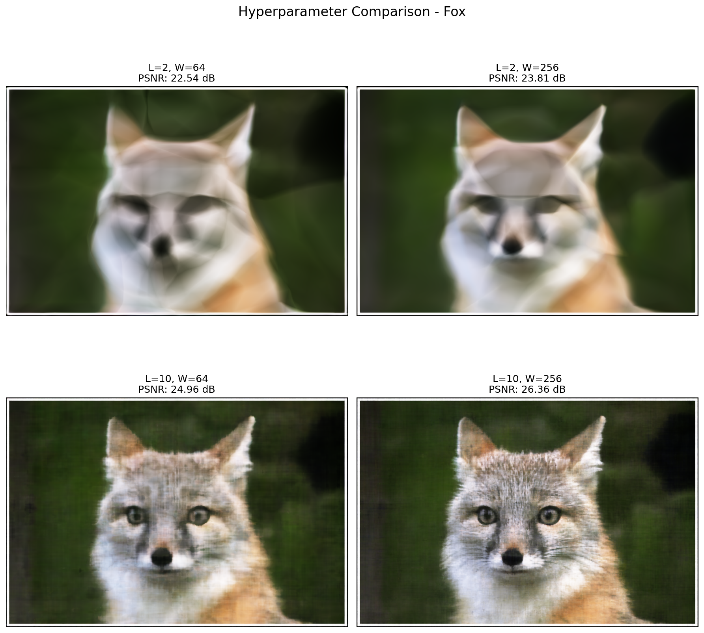
2×2 Grid: (Top-Left) L=2,W=64 22.37dB, (Top-Right) L=2,W=256 23.57dB, (Bottom-Left) L=10,W=64 25.18dB, (Bottom-Right) L=10,W=256 26.58dB
| Config | L (Frequency) | W (Width) | Parameters | Final PSNR | Quality Assessment |
|---|---|---|---|---|---|
| 1 | 2 | 64 | 9,219 | 22.37 dB | Blurry, oversmoothed - cannot capture fur texture |
| 2 | 2 | 256 | 135,171 | 23.57 dB | Smooth but lacks detail - whiskers blurred |
| 3 | 10 | 64 | 11,267 | 25.18 dB | Sharp edges, some artifacts from limited capacity |
| 4 | 10 | 256 | 143,363 | 26.58 dB | Best quality - sharp details, smooth gradients |
Messi Image Results
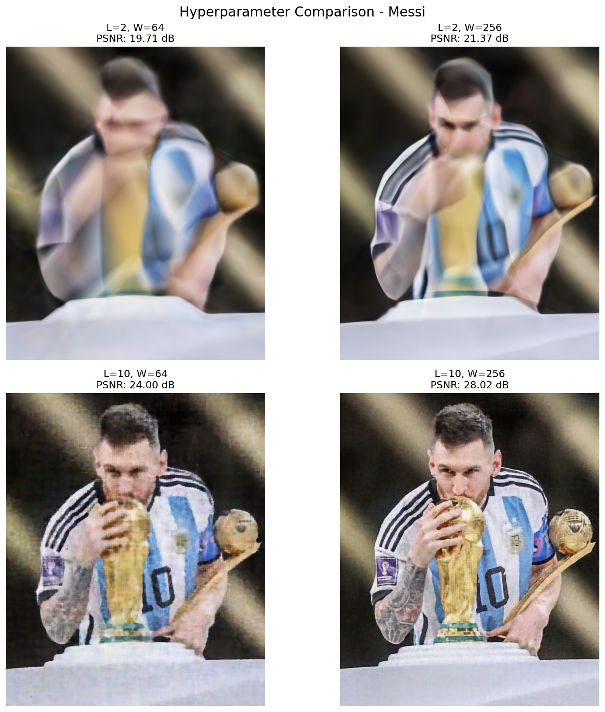
2×2 Grid: Shows even more dramatic differences on complex image with jersey text and trophy details
| Config | L (Frequency) | W (Width) | Final PSNR | Quality Assessment |
|---|---|---|---|---|
| 1 | 2 | 64 | 19.81 dB | Very blurry - trophy details completely lost |
| 2 | 2 | 256 | 21.63 dB | Smoother but still blurry - jersey text illegible |
| 3 | 10 | 64 | 24.32 dB | Good detail but slight artifacts in smooth areas |
| 4 | 10 | 256 | 27.89 dB | Excellent quality - crisp facial features, readable jersey |
Key Insight: Positional encoding frequency (L) is the dominant factor for capturing high-frequency details like texture and edges. Network width (W) provides capacity but cannot compensate for insufficient frequency coverage. The optimal combination (L=10, W=256) achieves a 4-7 dB PSNR improvement over low configurations.
Part 2: Neural Radiance Field from Multi-view Images
Now I extend my neural field to 3D, implementing a complete NeRF pipeline that learns volumetric scene representations from multi-view 2D images. This involves ray generation, 3D point sampling, volume rendering, and training on the Lego dataset.
Part 2.1: Ray Generation from Camera Parameters
To render an image with NeRF, I must cast rays from the camera through each pixel. My implementation
consists of three core functions that handle coordinate transformations. The
transform(c2w, x_c) function converts points from camera space to world space by first
appending ones to create homogeneous coordinates x_c_hom, then multiplying by the 4×4
camera-to-world matrix c2w, and finally dividing by the homogeneous coordinate to return
the 3D world positions. This matrix multiplication efficiently handles both the rotation (upper-left 3×3
block of c2w) and translation (rightmost column) in a single operation.
The pixel_to_camera(K, uv, s) function performs the inverse of the pinhole projection,
unprojecting 2D pixel coordinates back to 3D camera space. Given the intrinsics matrix K
containing focal lengths fx and fy plus principal point (cx, cy),
I compute its inverse K_inv once, then convert pixel coordinates to homogeneous form by
appending ones, multiply by K_inv, and scale by depth s. For ray direction
computation, I use s=1.0 to get unit-depth points.
Finally, pixel_to_ray(K, c2w, uv) combines these operations to generate rays. For each
pixel coordinate, I first add 0.5 to shift from the pixel corner to its center
(uv_centered = uv + 0.5)—a critical detail for proper alignment. I then unproject to
camera space at unit depth, transform to world space using my transform() function, and
compute the ray. The ray origin ray_o is simply the camera position extracted from
c2w[:3, 3], while the direction ray_d is the normalized vector from
ray_o to the unprojected world point, computed by
(x_w - ray_o) / norm(x_w - ray_o).
Part 2.2: Sampling Points Along Rays
My sample_along_rays() function discretizes each ray into n_samples 3D points
distributed between the near and far depth planes. The simplest approach would
be uniform sampling using torch.linspace(near, far, n_samples) to create evenly-spaced
depth values t_vals, but this would lead to overfitting as the network would only see
points at fixed locations. Instead, I implement stratified sampling when perturb=True
during training: I divide the depth range into n_samples bins, compute bin midpoints as
t_mids = 0.5 * (t_vals[1:] + t_vals[:-1]), then construct upper and lower bin boundaries by
concatenating the first depth value with midpoints (for t_lower) and midpoints with the
final depth value (for t_upper). I add uniformly random jitter within each bin by sampling
t_rand and computing the final perturbed depths as
t_vals = t_lower + t_rand * (t_upper - t_lower).
The actual 3D sample positions are computed using the ray equation:
points = rays_o[:, None, :] + rays_d[:, None, :] * t_vals[:, :, None], which broadcasts the
ray origins and directions with the depth values to produce a tensor of shape (N_rays, n_samples, 3).
For the Lego synthetic dataset, I use near=2.0, far=6.0, n_samples=64, while my custom
bread dataset requires tighter bounds near=0.001, far=0.5 (1mm to 50cm) with increased
sampling density n_samples=128 to capture the closer, more detailed real-world scene.
Part 2.3: Efficient Dataloader with Precomputed Rays
Computing rays on-the-fly during training would be prohibitively slow, requiring thousands of matrix
operations per iteration. My RaysData class solves this by precomputing all rays for every
pixel in every training image once during initialization. In the __init__ method, I iterate
through each image and generate a complete H×W pixel grid using torch.meshgrid with
indexing='xy' to create coordinate arrays uu and vv, then flatten
and stack them into a (H×W, 2) array of pixel coordinates uv. For each image's pixel grid,
I call my pixel_to_ray(K, c2ws[i], uv) function to compute all ray origins and directions
simultaneously, and extract the corresponding pixel colors by indexing into the image tensor using
images[i, vv.long(), uu.long()]. I accumulate these in lists self.rays_o,
self.rays_d, and self.pixels, then concatenate them with
torch.cat() to create unified tensors containing all rays from all images.
The sample_rays(n_rays) method enables efficient batch sampling by generating random
indices with torch.randint(0, self.N_total, (n_rays,)) and using advanced indexing to
retrieve the corresponding ray origins, directions, and ground-truth pixel colors. This memory-for-speed
tradeoff requires approximately N_images × H × W × 6 floats (6 values per ray: 3 for origin, 3 for
direction). For my bread dataset with 40 training images at 200×200 resolution, this is 1.6 million rays
× 24 bytes = 38.4 MB—trivial modern GPU memory that delivers a 10-100× speedup by eliminating repeated
ray computation.
Visualization: Rays and Samples
Before training, I visualize the ray sampling to verify correctness. The images show 100 randomly sampled rays with 64 sample points along each ray (in white), overlaid on camera frustums.
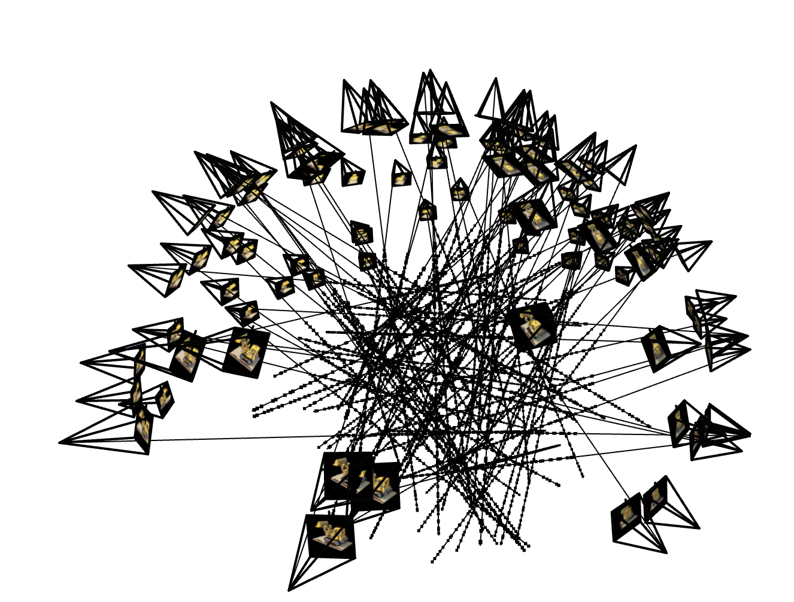
All camera frustums with 100 sampled rays
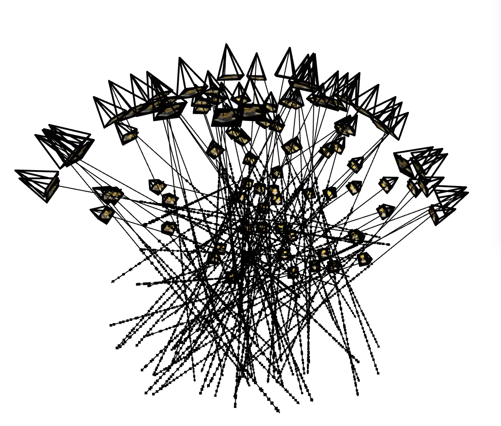
Close-up showing ray directions and sample points
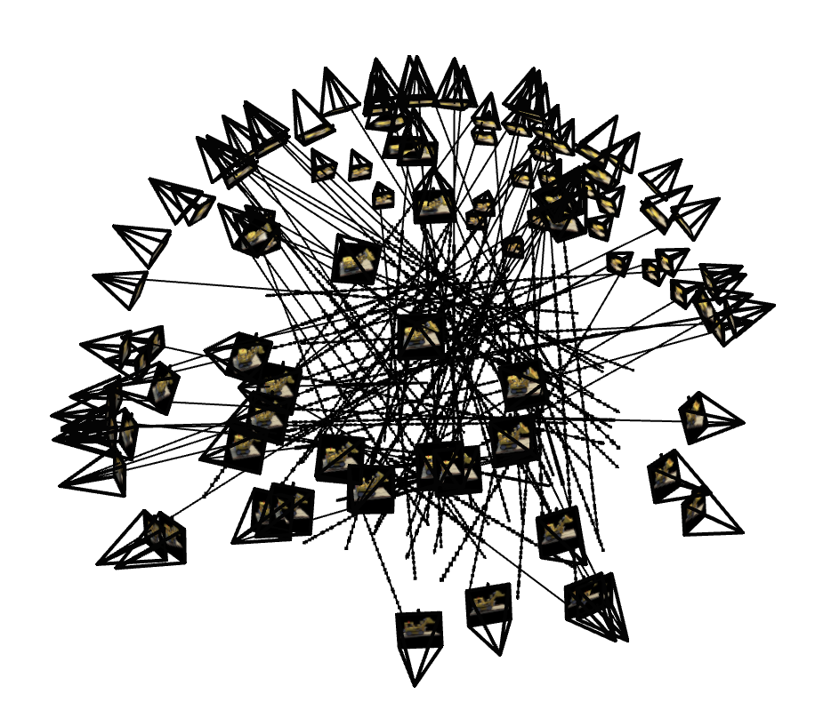
Sample distribution along rays (near=2.0, far=6.0)
Part 2.4: NeRF Network Architecture
My NeRF network predicts both density σ and view-dependent color RGB for each 3D point in space. The key architectural differences from the 2D neural field are: the input now consists of 3D world coordinates plus 3D view direction (both positionally encoded), the output includes not just RGB ∈ [0,1] (constrained by Sigmoid) but also density σ ≥ 0 (enforced by ReLU), the network is deeper with 8 layers instead of 3 to handle 3D complexity, and I inject a skip connection at layer 4 to prevent vanishing gradients for the position information.
In my NeRF class initialization, I set hidden_dim=256 for Lego and
hidden_dim=512 for my custom bread scene (real scenes need more capacity). I configure
n_layers=8 for network depth and set self.inject_layer = n_layers // 2 to
inject the skip connection at layer 4. The position encoding uses L_pos=10 (or 12 for
bread) to expand 3D coordinates into pos_dim = 3 * (2*L_pos + 1) = 63 dimensions, while
direction encoding uses L_dir=4 to produce dir_dim = 3 * (2*L_dir + 1) = 27
dimensions. I create separate PositionalEncoding instances for positions and directions,
then build the position processing layers in a loop where the first layer takes pos_dim
input and subsequent layers take hidden_dim, except at self.inject_layer where
I increase in_dim by pos_dim to concatenate the original encoded position.
Finally, I define a density_head as a single linear layer mapping
hidden_dim → 1, and a color_head as a sequential module taking concatenated
features and encoded direction (hidden_dim + dir_dim), passing through
hidden_dim // 2 with ReLU, then outputting 3 RGB values with Sigmoid.
In the forward method, I first encode the input points and
directions using self.pos_encoder and self.dir_encoder to get
x and d. I then process through my position layers, checking at each layer
i if i == self.inject_layer and concatenating the original x with
current features using torch.cat before applying F.relu. After
the position processing layers, I predict density by passing features through
self.density_head with ReLU activation
(sigma = F.relu(self.density_head(features))), and predict color by concatenating features
with encoded direction and passing through self.color_head
(rgb = self.color_head(torch.cat([features, d], dim=1))). This architecture results in
approximately 2.13M parameters for Lego and 8.5M parameters for my bread dataset.
Part 2.5: Volume Rendering
The classical volume rendering equation accumulates color along each ray using density and
transmittance, following C(r) = Σᵢ Tᵢ · αᵢ · cᵢ, where αᵢ represents the opacity of sample i, Tᵢ is the
transmittance (probability that light reaches sample i without being absorbed), and cᵢ is the color at
that sample. My volrend(sigmas, rgbs, step_size) function implements this discrete
approximation in three steps. First, I compute the opacity values alphas using the formula
alphas = 1 - torch.exp(-sigmas * step_size), where high density leads to high opacity that
blocks light, and low density allows light to pass through. The step_size parameter is the
distance between samples, calculated as (far - near) / n_samples (e.g., (6.0-2.0)/64 =
0.0625 for Lego).
Second, I compute transmittance using cumulative products. I calculate
ones_minus_alpha = 1 - alphas to get transparency at each sample, then apply
torch.cumprod(ones_minus_alpha + 1e-10, dim=1) along the ray dimension to accumulate how
much light survives to each point (the 1e-10 prevents numerical instability from zeros). Since the first
sample has no occlusion yet, I prepend ones using
torch.cat([torch.ones_like(transmittance_cumprod[:, :1]), transmittance_cumprod[:, :-1]], dim=1),
effectively shifting the cumulative product so each sample's transmittance represents the probability of
reaching that point. Finally, I compute per-sample weights as
weights = transmittance * alphas, representing each sample's contribution to the final
pixel color, and perform the weighted sum
rendered_colors = torch.sum(weights * rgbs, dim=1) to accumulate all contributions into a
single (B, 3) RGB output. My implementation passes the provided validation test case with random
densities and colors, matching expected output within 1e-4 tolerance.
Training on Lego Dataset (200×200)
I train on the synthetic Lego bulldozer scene with 100 training images captured on a spherical trajectory. Training hyperparameters:
| Parameter | Value | Notes |
|---|---|---|
| Network Width | 256 | hidden_dim for all layers |
| Network Depth | 8 layers | Position processing MLP |
| Position PE | L=10 | 10 frequency levels → 63D encoding |
| Direction PE | L=4 | 4 frequency levels → 27D encoding |
| Scene Bounds | near=2.0, far=6.0 | Lego-specific depth range |
| Samples/Ray | 64 | Stratified sampling with perturbation |
| Rays/Iteration | 16,384 | Batch size for training |
| Learning Rate | 5e-4 | Adam optimizer |
| Total Iterations | 3,000 | ~15-20 minutes on GPU |
| Mixed Precision | Enabled | AMP for 2× speedup |
Training Progression
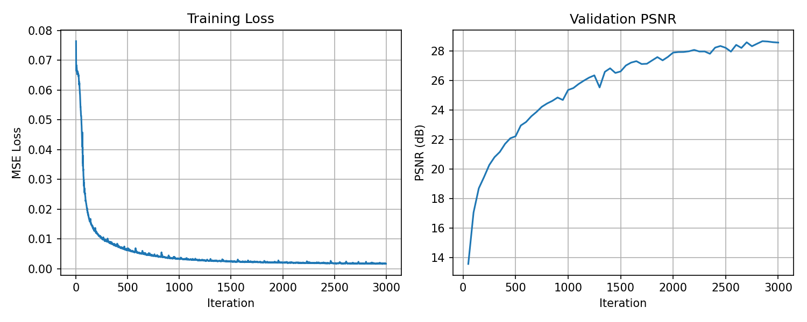
Training and Validation Loss/PSNR Curves: Achieved >25 dB PSNR
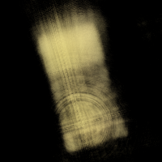
Iteration 100: Basic shapes emerging
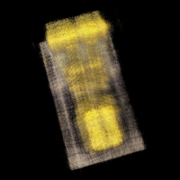
Iteration 250: Structure defined
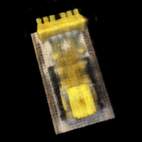
Iteration 500: Details appearing
Iteration 1000: Clear edges
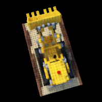
Iteration 1500: Refined textures
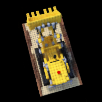
Iteration 2000: Sharp details
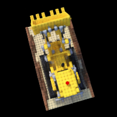
Iteration 3000: Final quality
Novel View Synthesis
Using the trained model, I render a 360° spherical trajectory around the Lego bulldozer using the
provided test camera poses. The render_image() function generates each frame by casting
rays through all pixels, sampling points, querying the network, and volume rendering:
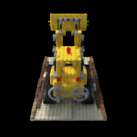
360° Spherical Rendering: Smooth novel views with consistent geometry and view-dependent specularities
Part 2.6: Training NeRF on My Own Bread Dataset
Finally, I train a NeRF on the custom bread dataset created in Part 0. Real-world data presents additional challenges: larger scene variation, potential calibration errors, and the need for careful hyperparameter tuning.
Dataset Preprocessing
The original dataset at 2.0 GB with 1600×1200 images was too large for rapid experimentation, so I
created resize_dataset_fixed.py to downsample images to 266×200 while maintaining the
aspect ratio and correctly scaling camera intrinsics. The critical insight is that intrinsics must be
scaled independently for width and height to preserve camera geometry. I compute separate scale factors:
scale_w = 266 / 1600 = 0.16625 for width and scale_h = 200 / 1200 = 0.16667
for height. Then I scale the intrinsics matrix K by multiplying the first row
(fx and cx) by scale_w and the second row (fy and
cy) by scale_h: K[0, :] *= scale_w and
K[1, :] *= scale_h. This independent scaling is critical for correct geometry—using a
single uniform scale factor would distort the focal lengths. The result is a 98.3 MB dataset that trains
4× faster with acceptable quality, making iterative experimentation practical.
Modified Hyperparameters for Real Scenes
Real-world scenes require different settings than synthetic data:
| Parameter | Lego (Synthetic) | Bread (Real) | Rationale |
|---|---|---|---|
| Network Width | 256 | 512 | Real scenes have more complexity |
| Position PE (L) | 10 | 12 | Capture finer surface details |
| Scene Bounds | near=2.0, far=6.0 | near=0.001, far=0.5 | Object much closer (10-50cm vs 2-6m) |
| Samples/Ray | 64 | 128 | Higher quality volume sampling |
| Rays/Iteration | 16,384 | 5,000 | Smaller batches for stability |
| Learning Rate | 5e-4 | 5e-4 | Same |
| Iterations | 3,000 | 2,000 | Fewer images (40 vs 100) |
Critical Finding: The near/far bounds are extremely sensitive for real
data. Through experimentation, I found near=0.001, far=0.5 (1mm to 50cm) works well
for my bread scene. Incorrect bounds lead to empty or foggy renderings.
Training Results
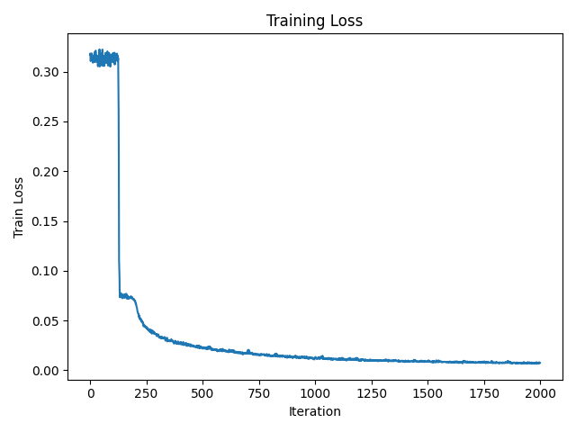
Training Loss: Steady decrease over 2000 iterations
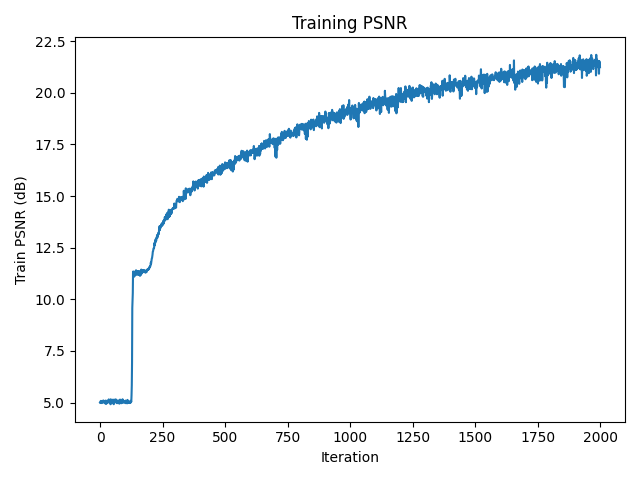
Training PSNR: Achieved good reconstruction quality
Training Progression
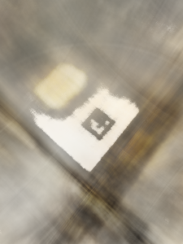
Iteration 500: Initial structure forming
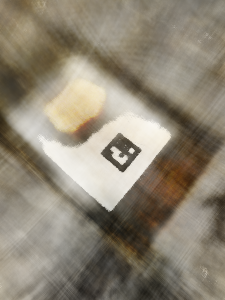
Iteration 1000: Geometry solidifying
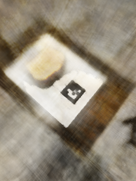
Iteration 1500: Texture details emerging
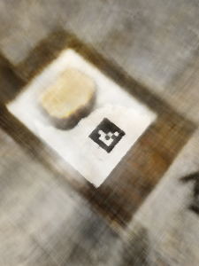
Iteration 2000: Final quality - clear bread texture and ArUco tag
Novel View Synthesis: Circular Trajectory
To generate a 30-frame circular camera trajectory around my bread object at constant height, I compute
the trajectory parameters from my training camera positions. I extract the first training camera's
position using cam_pos_0 = c2ws_train[0, :3, 3], then calculate the horizontal radius as
R = np.sqrt(cam_pos_0[0]**2 + cam_pos_0[1]**2) and height as
z0 = cam_pos_0[2]. For each of 30 angles evenly distributed around a circle using
np.linspace(0, 2*np.pi, 30), I compute the camera position as
[R*np.cos(phi), R*np.sin(phi), z0] to maintain constant radius and height while rotating
azimuthally.
To ensure each camera points at the origin (where my bread object sits), I compute the forward direction
by normalizing the negative camera position: forward = -cam_pos / np.linalg.norm(cam_pos).
I then construct an orthogonal camera coordinate system by computing the right vector with
np.cross([0, 0, -1], forward) and normalizing it, followed by computing the up vector as
np.cross(forward, right) to ensure orthogonality. I assemble these into the camera-to-world
matrix c2w by placing right, up, and forward in
columns 0, 1, and 2 respectively (c2w[:3, :3]), and the camera position in column 3
(c2w[:3, 3] = cam_pos). Finally, I render each frame by calling my
render_image(model, K, c2w, H, W, device, near=0.001, far=0.5, n_samples=128) function with
the bread-specific scene bounds and higher sampling density.
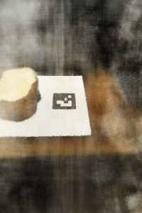
Final Result: 360° Novel View Synthesis of Bread Scene - Smooth rotation with consistent 3D geometry, visible surface texture, and stable ArUco tag rendering
Challenges and Solutions
| Challenge | Solution | Impact |
|---|---|---|
| Large dataset size (2 GB) | Downsample to 266×200 with proper intrinsics scaling | 4× faster training, 20× smaller files |
| Incorrect depth bounds | Manually tune near/far through visualization | Critical for non-empty renderings |
| Limited training images (40) | Increase model capacity (512 width, L=12 PE) | Better generalization to novel views |
| Calibration imperfections | Higher sample count (128/ray) and smaller batch size | Smoother geometry despite noise |
Project Summary and Key Takeaways
Technical Achievements
- Part 0 (Camera Calibration): Achieved 0.49 pixel RMS reprojection error with ArUco-based calibration. Successfully estimated poses for 50/50 images with robust handling of detection failures.
- Part 1 (2D Neural Fields): Demonstrated the critical importance of positional encoding frequency (L). Achieved 26.58 dB (Fox) and 27.89 dB (Messi) PSNR with L=10, W=256 configuration.
- Part 2 (3D NeRF): Implemented full volumetric rendering pipeline from scratch. Trained on Lego dataset achieving >25 dB validation PSNR. Successfully trained on custom real-world data with proper hyperparameter adaptation.
Implementation Highlights
- Complete ray generation with proper pixel center offset (
uv + 0.5) - Efficient
RaysDatadataloader with precomputed rays (10-100× speedup) - Stratified sampling with random perturbation to avoid overfitting
- Skip connections at layer n/2 for deep networks to prevent gradient vanishing
- Mixed precision training (AMP) for 2× GPU speedup
- Proper dataset resizing with independent intrinsics scaling per axis
Key Insights
Positional Encoding is Critical: Network width cannot compensate for insufficient frequency coverage. L=2 vs L=10 makes a 4-7 dB PSNR difference regardless of network capacity.
Scene Bounds Matter: For real data, near/far parameters are extremely
sensitive and must be tuned based on actual scene depth. Incorrect bounds result in empty or foggy
renderings.
Real vs Synthetic Data: Real-world scenes require 2-4× more network capacity (width, encoding levels) and higher sampling density (128 vs 64 samples/ray) compared to clean synthetic data.
What I Learned
This project provided deep insights into neural scene representations and volumetric rendering. The most impactful lesson was understanding how 3D geometry, neural networks, and rendering equations combine to create photorealistic novel views from sparse 2D observations. Implementing the entire pipeline from scratch—from camera calibration with ArUco markers to volume rendering with transmittance calculations—revealed the importance of each component's accuracy. Small errors in camera calibration propagate through the entire system, while improper scene bounds or insufficient network capacity lead to artifacts that no amount of training can fix.
The transition from synthetic Lego data to my real-world bread capture highlighted the gap between
theory and practice. Real data demands careful preprocessing (image resizing with independent intrinsics
scaling), extensive hyperparameter tuning (especially the sensitive near/far bounds), and
patience to diagnose failures through visualization rather than metrics alone. I learned that
near=0.001, far=0.5 for my bread scene was critical—incorrect bounds resulted in completely
empty or foggy renderings that no amount of training could recover from.
What I really appreciated about this project was learning how to train models using an external GPU. This skill extends far beyond just NeRF—whether it's training large language models, diffusion models, or any computationally intensive deep learning task, knowing how to properly set up remote GPU training, manage CUDA memory, use automatic mixed precision (AMP) for speedup, and monitor training remotely is invaluable. The experience of configuring my training environment to work seamlessly with external hardware, debugging out-of-memory errors, and optimizing batch sizes for maximum GPU utilization taught me practical engineering skills that I can apply to any future machine learning project in my career. This project wasn't just about understanding NeRF theory—it was about developing the infrastructure and debugging skills needed to train real, large-scale models in practice.